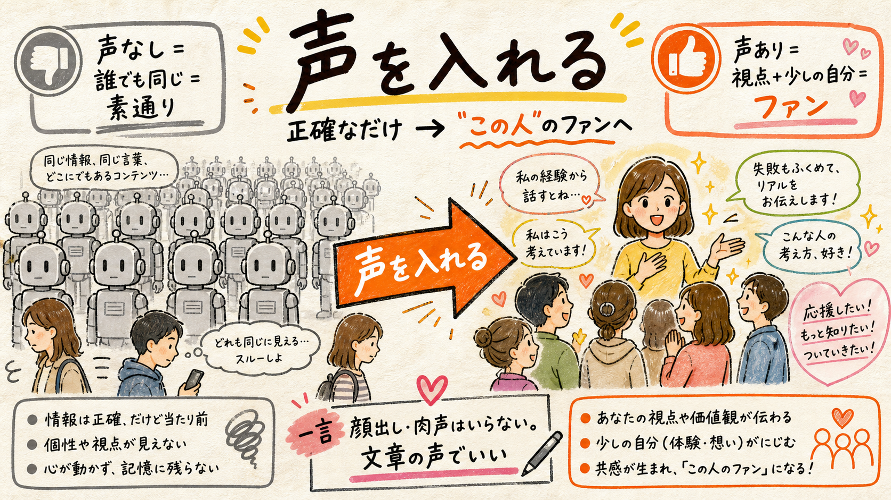
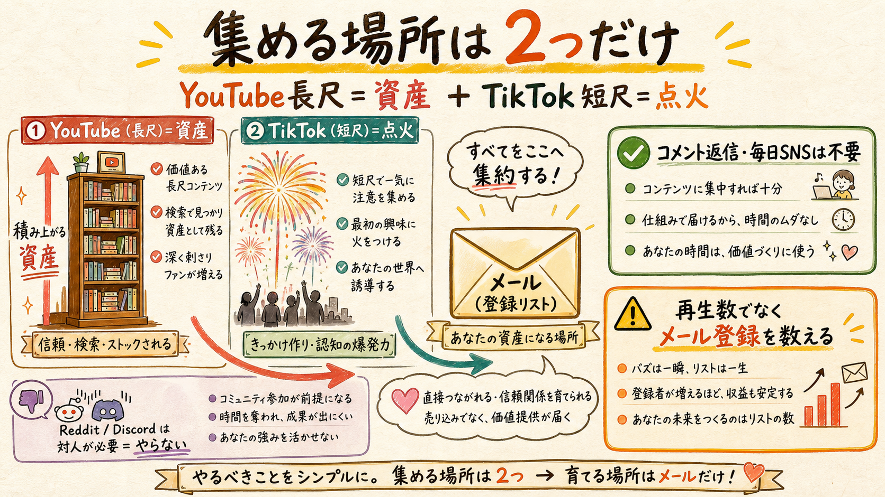
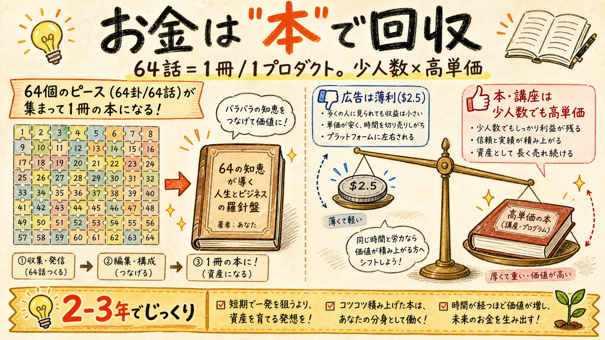

アニメ×易経 ― 戦略を、絵で。
むずかしい話を図にしました。要点は3つだけ。
① 声を入れる

正確なだけだと素通りされる。あなたの視点と少しの自分を入れると「この人のファン」が生まれる。顔出しも肉声もいらない——文章の声でいい。
② 集める場所は2つだけ

YouTube長尺（資産）＋ TikTok短尺（点火）の2本だけ。コメント返信・毎日SNSの対人は不要。Reddit/Discordはやらない。数えるのは再生数でなくメール登録。
③ お金は「本」で回収

広告は薄利。だから64話を1冊の本/1プロダクトにして、少人数×高単価で売る。2-3年でじっくり資産化（あなたの「急がない」と合う）。
👉 次の一歩：ep01に"声"を入れた版を1本だけ作って、今のと並べて違いを見る。
いちばん安くて、いちばん効く検証です。